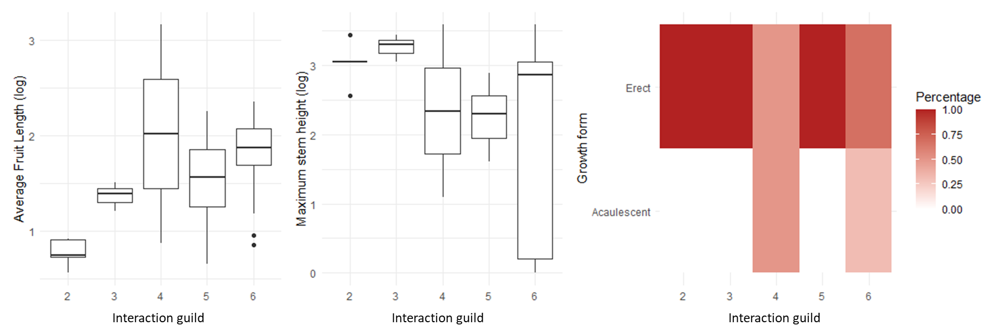
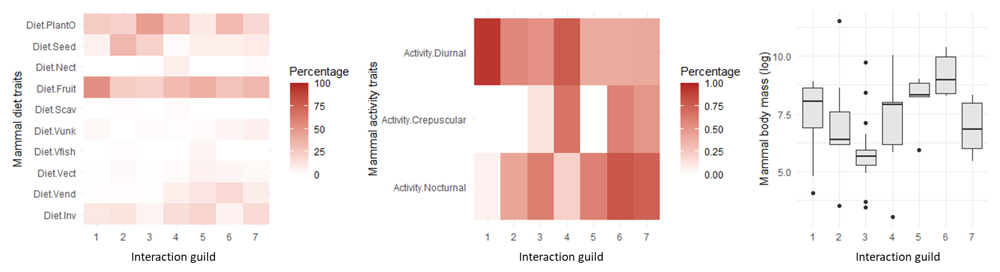
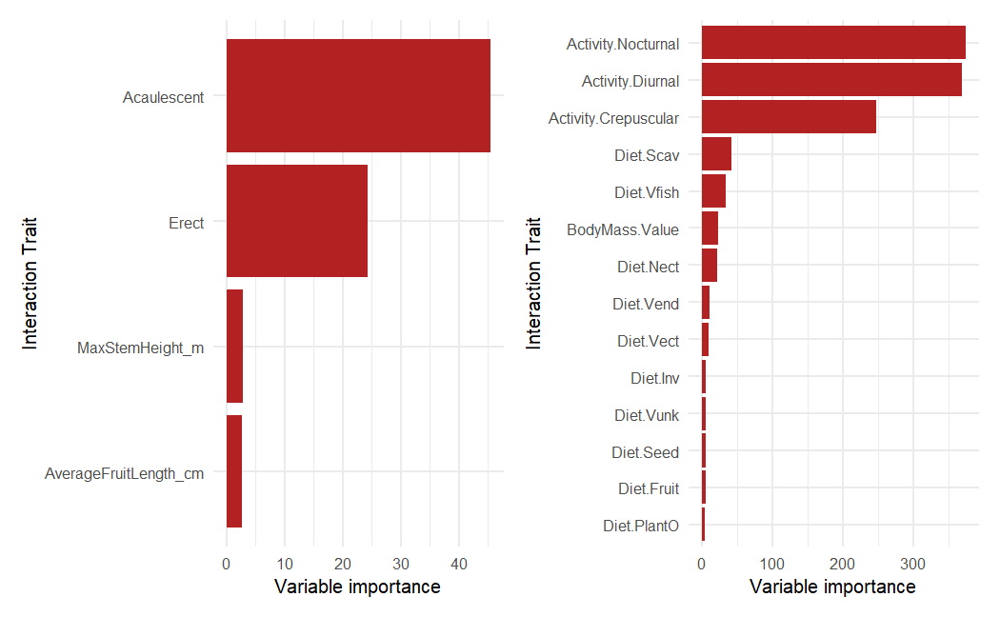
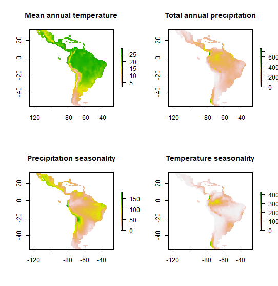
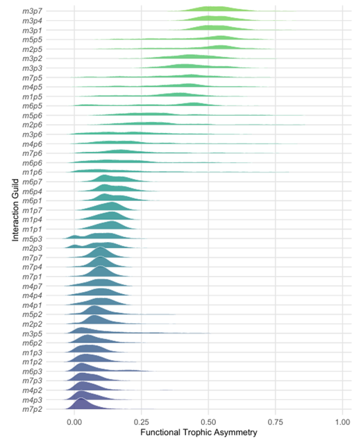
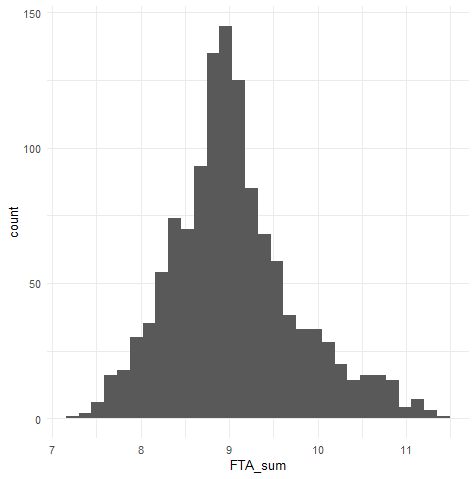
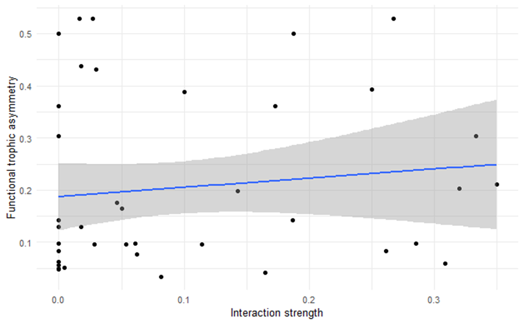
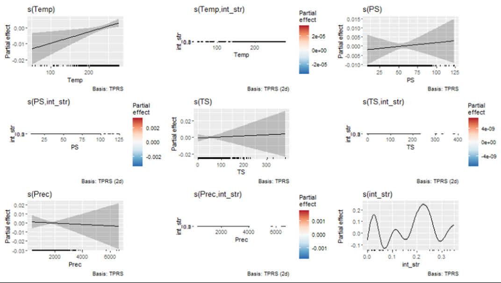
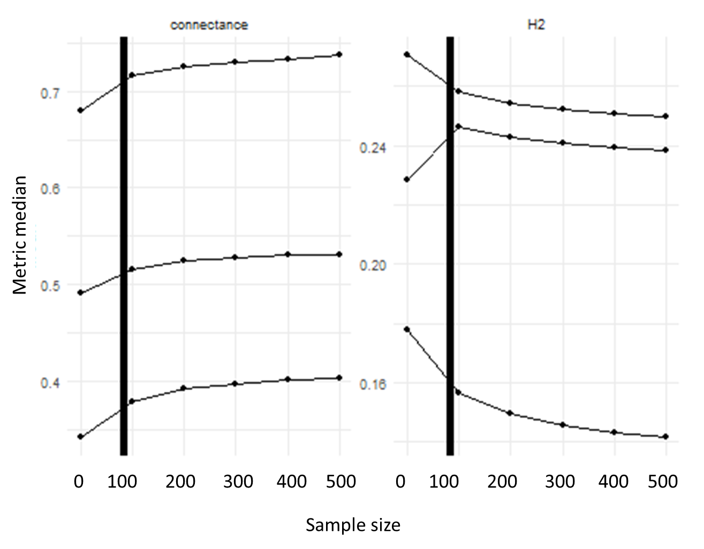
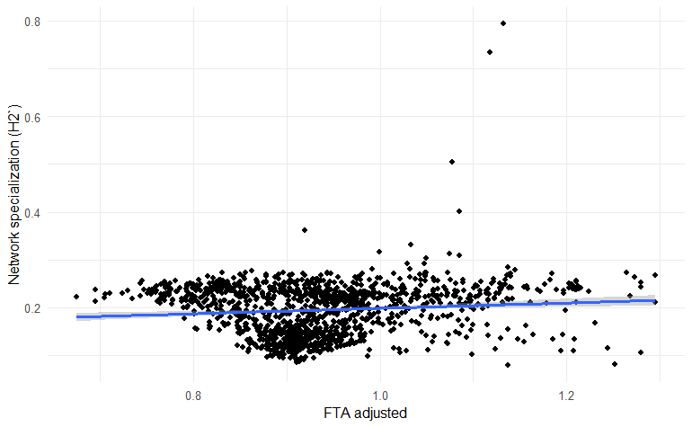

| Interaction guild | |||||||
|---|---|---|---|---|---|---|---|
| Trait summaries by guild (1–7) | |||||||
Interaction guild
|
|||||||
| 1 | 2 | 3 | 4 | 5 | 6 | 7 | |
| Mammal frugivores | |||||||
| # species | 66.00 | NA | 341.00 | 33.00 | NA | 15.00 | 33.00 |
| Body mass (mean) | 6.47 | NA | 4.75 | 3.91 | NA | 9.73 | 8.15 |
| Percentage fruit in diet (mean) | 64.09 | NA | 21.70 | 48.48 | NA | 20.00 | 36.36 |
| Body mass (sd) | 1.68 | NA | 1.33 | 0.66 | NA | 0.73 | 0.52 |
| Percentage fruit in diet (sd) | 11.63 | NA | 7.20 | 3.64 | NA | 12.54 | 4.89 |
| Percentage diurnal | 48.0 | NA | 22.0 | 3.0 | NA | 40.0 | 79.0 |
| Percentage nocturnal | 52.0 | NA | 84.0 | 97.0 | NA | 73.0 | 24.0 |
| Percentage crepuscular | 8.0 | NA | 10.0 | 0.0 | NA | 47.0 | 30.0 |
| Palms | |||||||
| # species | NA | 25.00 | 15.00 | NA | 265.00 | 137.00 | NA |
| Stem height (mean) | NA | 3.05 | 3.45 | NA | 1.95 | 1.18 | NA |
| Fruit length (mean) | NA | 0.80 | 1.69 | NA | 0.90 | 1.39 | NA |
| Stem height (sd) | NA | 0.27 | 0.26 | NA | 0.63 | 0.96 | NA |
| Fruit length (sd) | NA | 0.11 | 0.40 | NA | 0.31 | 0.57 | NA |
| Percentage acaulescent | NA | 0.0 | 0.0 | NA | 1.0 | 36.0 | NA |
| Percentage erect | NA | 100.0 | 93.0 | NA | 98.0 | 64.0 | NA |
Appendix B — Distinct functional responses of consumers and producers to climate drive mutualistic network asymmetry
B.1 Modelling interaction assembly
To capture probabilistic patterns from interactions observed at the continental scale, we tested four modes of interaction assembly: the stochastic block model, the connectance model, the matching-trait model, and the matching-centrality model. (Terry and Lewis 2020). Each model was evaluated based on its ability to estimate interaction probabilities that best predict the observed binary interaction data.
For the trait, connectance, and matching-centrality models, parameters were estimated with the Nelder–Mead algorithm via repeated maximum-likelihood optimization, using multiple random starts and averaging predictions from the best-fitting runs to avoid local optima. The stochastic block model instead assigns species to discrete interaction groups, such that interaction probabilities depend only on group membership, and uses a degree-corrected bipartite SBM algorithm to iteratively improve group assignments based on likelihood gains. To stabilize inference, multiple SBM fits were performed and predictions were averaged across the best solutions, yielding robust estimates of group structure and block-level interaction probabilities.
B.1.1 Stochastic Block Model (SBM)
The SBM assumes that networks exhibit a modular pattern, where subsets of species interact predominantly within other groups of highly connected species (Terry and Lewis, 2020). Interaction probabilities depend only on the group membership of species, not on individual species identities. Species are initially assigned to groups at random, and the model iteratively improves these assignments by moving species between groups to maximize the likelihood of the observed interaction network. This optimization results in an incidence matrix, Z, representing species-level group associations, and a squared matrix, Θ, reflecting interaction probabilities within and between groups. The likelihood (L) of the SBM is given by:
B.1.2 Connectance Model
In the connectance model species are characterized by continuous connectivity scores that represent their tendency to interact broadly or narrowly within the network. The model assumes a generalist–specialist hierarchy, where interactions of specialist species are probabilistic subsets of those of generalists, rather than arising from discrete groups. Species connectivity scores are optimized by maximizing the likelihood of reproducing the observed interaction matrix. The likelihood (L) of the connectance model is given by:
B.1.3 Matching-Trait Model
The matching-trait model assumes that interactions (Pᵢⱼ) are governed by trait compatibility rather than by overall connectance or group membership. Each species is positioned along one or more latent trait axes, and interaction probabilities increase when consumer and resource trait values are closely aligned. Model parameters are optimized by maximizing the likelihood of the observed interaction matrix.
B.1.4 Matching-Centrality Model
The matching-centrality model integrates approaches from both the connectance and matching-trait models. It simultaneously optimizes species connectivity scores and trait axes to predict interactions. The likelihood (L) for this model is:
B.1.5 Testing the accuracy of interaction assembly models
Following guidelines established by Poisot (2023), we evaluated the accuracy of interaction assembly models using Youden’s J statistic.
This metric quantifies a model’s ability to correctly distinguish observed interactions from non-interactions by balancing sensitivity (true positive rate) and specificity (true negative rate), and is independent of interaction prevalence. For each model, predicted interaction probabilities were converted to binary predictions using the threshold that maximized Youden’s J, allowing direct comparison of classification performance across alternative assembly hypotheses.In this context, higher values of Youden’s J indicate greater support for a given assembly model in reproducing observed interaction structure beyond random expectation.
B.2 Trait-based downscaling of ecological networks
B.2.1 Using SBM to cluster species into interaction guilds
We used the stochastic block model (SBM) as our benchmark latent variable model to capture probabilistic patterns from interactions that are observed at the continental scale.
The output of this model is:
Incidence matrices reflecting species level associations to a group
Palms

- Mammals

- a squared matrix reflecting the probability of an interaction between species within and between interaction guilds

B.2.2 Trait-based characterization of interaction guilds
Characterizing guilds through traits allow interaction patterns to be interpreted in terms of ecological terms rather than topology alone. For example, resource availability is reflected in palm fruit size, stem height, and growth form, which determine which consumers can access and exploit resources. Consumer foraging strategies are captured by mammal diet composition, activity patterns, and body mass, distinguishing guilds dominated by nocturnal generalist frugivores from those structured around smaller, diurnal or crepuscular specialists.


B.2.3 Interaction guild prediction
Given that we have information on the trait distribution of the species we have estimated the probability of association with SBM. We use these traits to train multinomial models that predict interaction guilds for all other palm and mammal species in the neotropics without interaction data but information on their traits.
We use multinomial logistic regression models to predict interaction guilds with species trait data. We justify the choice of multinomial logistic regression models as these can handle the prediction of non-binary outcomes, that is in our case, the labeling of SBM groupings per species. We extracted variable importance scores with combinations of the absolute values of the model weights (Gevrey, Dimopoulos, and Lek 2003).

B.2.3.1 Important traits

B.2.4 Building spatially explicit synthetic networks
B.2.4.1 Finding co-occuring assemblages at the grid-cell level
To identify local co-occurring assemblages of palms and mammals, we converted species range polygons into presence-by-grid-cell representations using a common spatial grid across the Neotropics. When creating grids, we do not consider spherical geometries to avoid topology artifacts (e.g., duplicate vertices) that can occur when intersecting complex polygons as the spatial representations of species ranges. We then created a 1° × 1° grid covering the Neotropics and intersected the grid with each palm and mammal ranges to create local species occurrences. These gridded palm and mammal presence layers can then be combined per grid cell to define local palm assemblages, local mammal assemblages, and ultimately co-occurring palm–mammal assemblages used in downstream network construction and trait-based analyses.

B.2.4.2 Assembling grid-cell level networks
We use a composite interaction probability score that integrates block-model interaction propensity, relative spatial overlap, and geographic proximity, such that interactions are favored between species assigned to compatible guilds, with overlapping ranges and short spatial separation between their range centroids.
This approach allowed us to recreate synthetic probabilistic plant-mammal frugivore networks for each grid-cell across the Neotropics, while accounting for the heterogeneity of species ranges within each grid. We applied an exclusion criteria to the list of grids before applying this network generating algorithm, and selected only those grids with at least 5 palm and 5 mammal species.
B.3 Evaluating functional changes in networks across environmental gradients
B.3.1 Bioclimatic data
WorldClim bioclimatic variables are derived from long-term monthly climate surfaces based on weather station records distributed globally. WorldClim variables are generated by spatially interpolating station data using thin-plate splines that incorporate elevation and other covariates, producing continuous gridded climate surfaces that represent regional climatic gradients across complex tropical topography. We used the following as spatial predictors:
Mean Annual Temperature (BIO01) represents the average temperature over all months of the year and summarizes the overall thermal energy available to ecosystems.
Total Annual Precipitation (BIO12) is the sum of monthly precipitation values and captures the total annual water input to a region.
Temperature Seasonality (BIO14) quantifies the amount of temperature variation over the year, calculated as the standard deviation of monthly mean temperatures multiplied by 100, and reflects the degree of thermal variability.
Precipitation Seasonality (BIO15) measures the variability of monthly precipitation totals, expressed as the coefficient of variation, and indicates how evenly precipitation is distributed throughout the year.

B.3.2 Measuring interaction guild diversity across the environmental gradient
We performed spatial joins to associate each grid-cell species assemblage with corresponding bioclimatic variables. We then quantified variation in the relative occupancy of interaction guilds inferred by the stochastic block model by calculating, for each grid cell, the proportion of palm or mammal species assigned to each interaction guild. For a given assemblage, we first counted the number of palm species and mammal species assigned to each interaction guild. These counts were then normalized by the total number of species in each trophic level to obtain proportional guild representations.
Unlike trait-space–based measures of functional richness that quantify the volume of multivariate trait space occupied by species, our network-based formulation captures diversity in realized interaction roles rather than diversity in trait values per se. Because interactions in bipartite networks reflect both trait matching and network structure, functional richness defined from SBM-derived interaction guilds captures realized ecological roles rather than only trait diversity.

B.3.3 Measuring FTA
Functional trophic asymmetry was calculated as the absolute difference between the normalized palm and mammal guild proportions, capturing the degree to which interaction guild composition differs between resources and consumers within the same assemblage. This resulted on 49 individual metrics (7 x 7 ) of FTA per gridcell, each representing a unique interaction guild combination.

We summed FTA values across all interaction guild combinations to obtain an aggregate metric of FTA per grid cell \(FTA_{sum}\).

Because \(FTA_{sum}\) can be sensitive to asymmetries arising in weakly connected parts of the network, weighting functional trophic asymmetry by inter-guild interaction strength accounts for the fact that not all guild mismatches are equally relevant to network organization. The adjusted metric therefore prioritizes asymmetry in strongly interacting guild pairs, providing a more ecologically meaningful measure of trophic imbalance.

B.3.3.1 Evaluating the relationship between FTA and interaction strength
To ensure that the interaction‐weighted adjustment did not introduce systematic bias, we explicitly tested whether the \(FTA_{sum_{adj}}\)was correlated with interaction strength. This assessment verifies that the adjustment does not trivially inflate or deflate asymmetry values as a direct function of interaction intensity, but instead preserves FTA as an independent measure of trait mismatch.

B.3.4 Does climate determine FTA?
We used generalized additive models (mgcv) to relate the response to climatic predictors—mean annual temperature (Temp), precipitation seasonality (PS), temperature seasonality (TS), and total annual precipitation (Prec)—and to interaction strength (int_str). Each climate variable was included as a univariate smooth s(⋅) (thin-plate regression spline; k=9k=9k=9), and potential modulation by interaction strength was modeled using smooth interaction terms s(climate,int_str)(k=27). A separate smooth s(int_str) captured nonlinear effects of interaction strength. Smoothing parameters were selected by generalized cross-validation (GCV) using the magic optimizer. Model adequacy was evaluated using mgcv basis-dimension checks (k-index), effective degrees of freedom, and residual diagnostics.
Checks on the basis dimensions show no evidence that any smooth term is underfit: the climatic predictors (temperature, precipitation, and their seasonalities) have effective degrees of freedom close to one and k-indices near one with high p-values, indicating that their effects are approximately linear and adequately captured by the chosen smooths. Interaction terms between climate variables and interaction strength show very low complexity. In contrast, the smooth term for interaction strength alone is highly flexible and strongly supported, indicating a pronounced nonlinear relationship. Convergence diagnostics indicate a stable and well-conditioned model.

B.3.5 Does FTA influence network structure?
We examine the variation in network structure with network specialization and the spectral radius. We computed a metric of network-level specialization (H2’) that is independent of network size and marginal totals. The metric is computed from the interaction matrix by comparing the deviation of interaction frequencies from a null expectation based on species’ total interaction frequencies, and is then normalized to range between 0 (no specialization, complete generalization) and 1 (maximum specialization). In addition, we used the spectral radius as a complementary metric of network structure. The spectral radius is computed as the largest eigenvalue of the (weighted or binary) interaction matrix. This metric captures the dominant mode of interaction structure in the network, reflecting how strongly interactions are concentrated along a few highly connected species or pathways. A larger spectral radius indicates a more centralized interaction structure dominated by generalists, whereas lower values suggest interactions that are more evenly distributed creating diffuse networks.

We control for differences in sampling intensity and network size by standardizing interaction data to a common level of observation. Specifically, we used rarefy function from cassandRa to repeatedly subsample interactions from the original bipartite gridcell level network to a fixed number (100) of interactions and recalculates network structural metrics (i.e network specialization, structural radius) on each subsample. We used the median of this subsampled distribution as the gridcell metric of network structure. This procedure reduces biases that arise because larger or more densely sampled assemblages tend to exhibit higher connectance.

B.3.5.1 Evaluating the relationship between FTA and H2’

B.3.5.2 Evaluating the relationship between FTA and the spectral radius